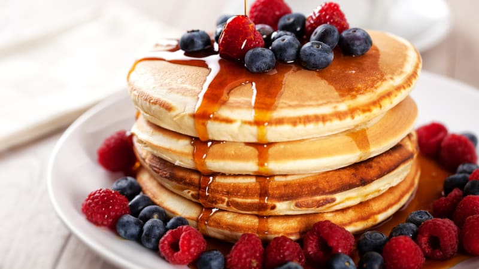

Nekynuté extra rychlé lívance podle tohoto receptu připravíte snadno a během chvilky. Místo droždí postačí kypřicí prášek a práci vám usnadní hrnkový rozpis surovin. Hotové lívanečky můžete ozdobit džemem, šlehačkou nebo oslazeným tvarohem.

Seznam surovin:
- 2 hrnky hladké mouky
- 1 kypřicí prášek do pečiva
- 4 lžíce cukru krupiced
- 2 vejce
- 1 hrnek mléka
- 2 lžíce oleje
- 1 špetka soli
- olej na smažení
-
Do mísy rozklepneme vejce, přilijeme mléko, olej a krátce prošleháme. Přidáme prosátou mouku s kypřicím práškem, cukr, špetku soli a vše důkladně promícháme do hladkého těsta.
-
V lívanečníku nebo v klasické pánvi rozehřejeme olej.
-
Po lžících do pánve lijeme těsto do tvaru lívanečků. Lívanečky smažíme pozvolna a dozlatova z obou stran (dost nabydou). Olej je potřeba často dolévat.
-
Hotové lívanečky potřeme džemem a dozdobíme šlehačkou nebo oslazeným tvarohem a ihned podáváme.